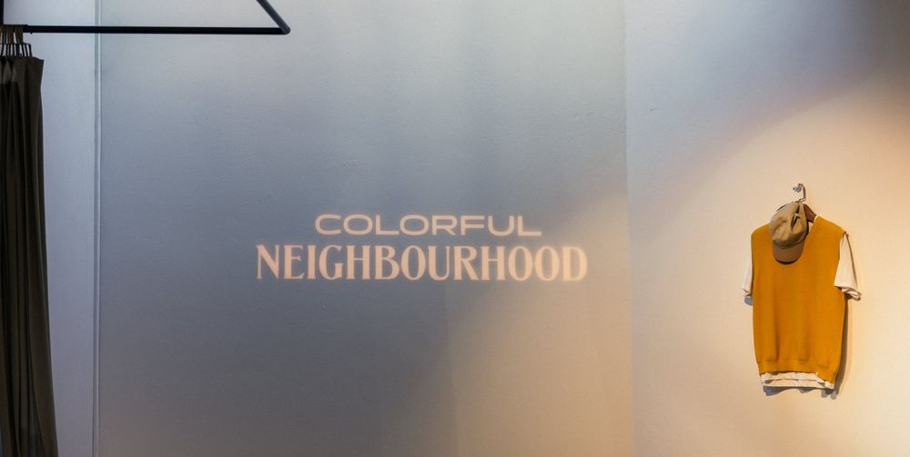
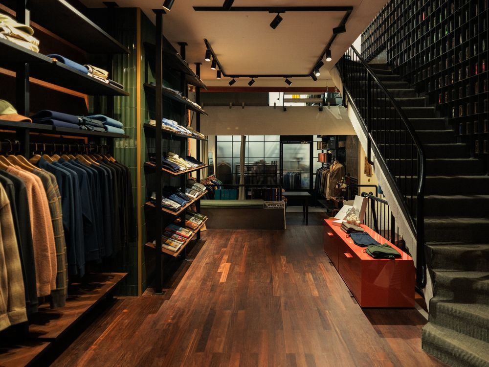
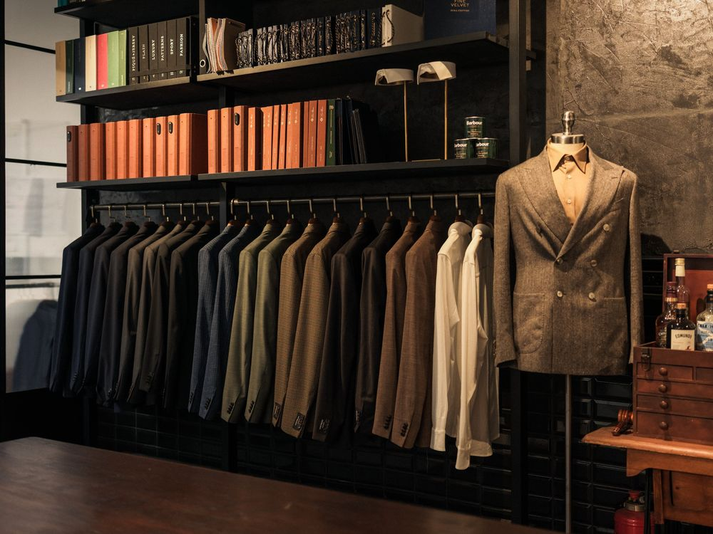
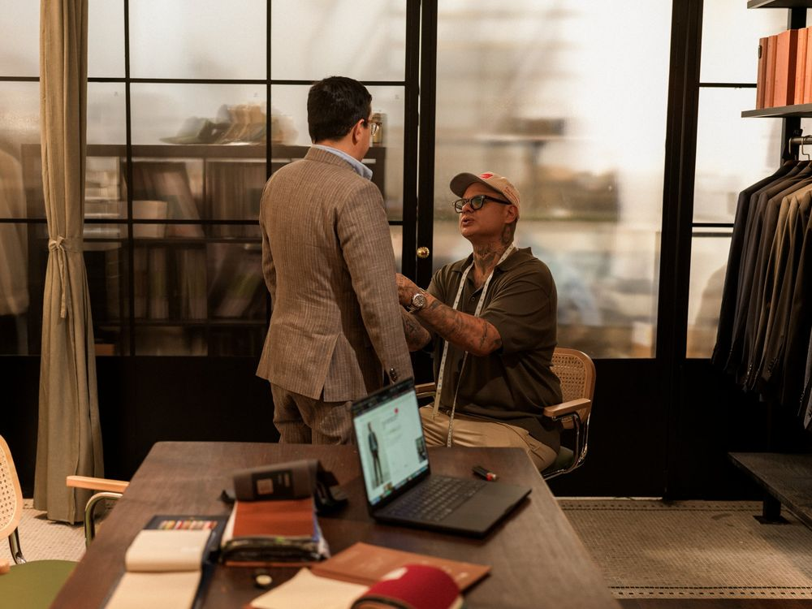
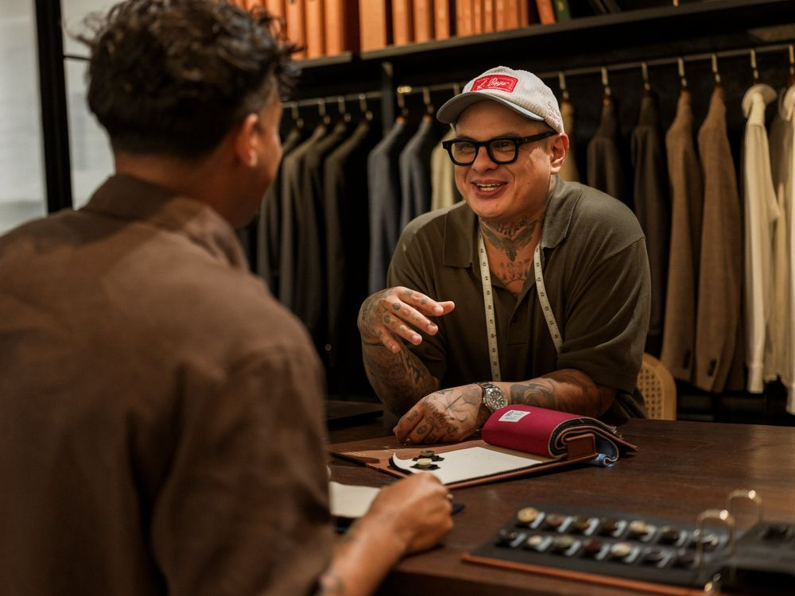
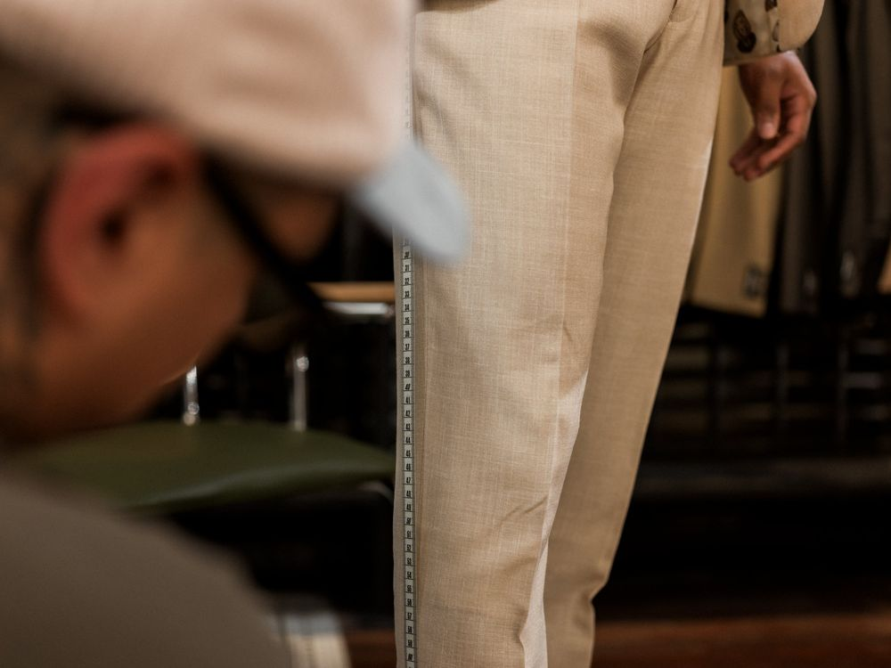
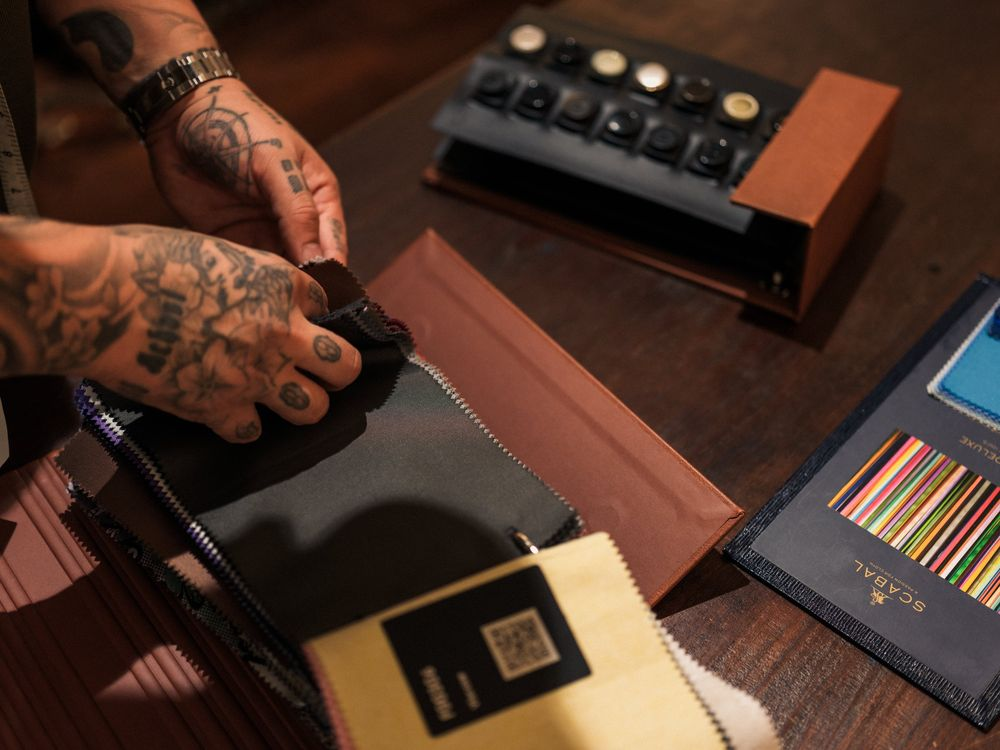

Colorful Neighbourhood






















Colorful Neighbourhood
Bildwelt für den Website-Relaunch, 2026
Für den Website-Relaunch des Freiburger Herrenausstatters habe ich Laden, Beratung und Massatelier fotografiert. Warmes Dauerlicht, dunkle Töne und viel Nähe zu Händen, Stoffen und Details.